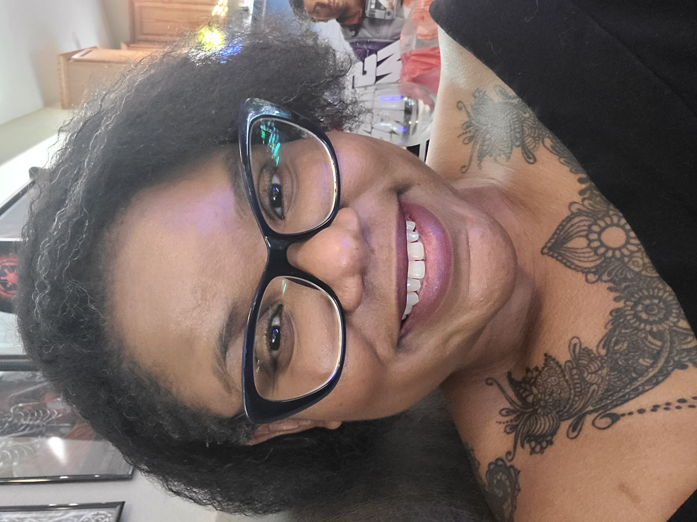

Candice Roma

Summary
As a creative marketer, I leverage data and analytics to craft compelling, high-converting narratives across platforms. Applying both an artistic flair and an analytical mindset, I optimize messaging using experimentation and measurement to boost engagement, loyalty, and sales.
With 14 years of refining my craft as an editor and writer, I excel at creating emotionally resonant yet persuasive content. My strengths include identifying target insights through data analysis and synthesizing performance data to inform an agile, optimized content strategy.
As a current student of a postgraduate program at the McCombs School of Business at the University of Texas at Austin (completion date: January 2024), I have added Python, Artificial Neural Networks (ANN), Convolutional Neural Networks (CNN), and Advanced Machine Learning techniques to my arsenal of analytical tools.
I hold a BA and an MFA degree from Dartmouth College and the University of Notre Dame, focusing on the art and science of engaging writing. As the editor/proofreader of 350+ published books, I have mastered finding resonant stories in data while conveying key messages to maximize impact. I am highly experienced in applying an audience-centric, results-driven approach to craft content that enchants yet converts.
Education
- Postgraduate Program in AI/ML | McCombs School of Business at the University of Texas | January 2024*
- Master of Fine Arts, Creative Writing | University of Notre Dame | 2004
- Bachelor of Arts, Creative Writing | Dartmouth College | 2001
Work Experience
- SENIOR EDITOR | BrightLeaf Group, Inc. March 2022 - Present
Lead content editor for a digital communications firm specializing in high-profile, strategic public relations that creates multimedia reports for multinational clients.
- Edited and proofread the 2021 Sustainability Report and the Diversity, Equity, and Inclusion Handbook for KKR, Inc., a $264B global investment firm.
- Edited the 2021 Sustainability Overview report for shareholders and the investment community for Axius Water, a leading wastewater treatment platform and KKR portfolio company.
- FOUNDER, CEO, CHIEF CREATIVE OFFICER | EditorMuse June 2009 | Present
Launched a recognized creative writing and editorial practice, marketed exclusively by word of mouth and referrals, to support a stable of publishers, book publishing editorial services, independent authors, and corporate marketing teams while focusing on bringing important stories, concepts, and messaging to life.
Publishing
- Copy edited and proofread 200+ books published by Penguin Publishing, Routledge, Rowan & Littlefield, Taylor & Francis, Jones & Bartlett Learning, Macmillan, Texas Tech University Press, Wolters Kluwer, and more.
- Performed developmental, line, and copy editing; proofreading; copywriting; and content creation, as well as sensitivity reading, for clients in a wide range of genres, including fiction (romance novels, sci-fi, literary, and fantasy), sociology, technology, and legal case books.
Copywriting
- Drove hair care client to $1M revenue by developing differentiated, audience-aligned messaging informed by market research. | 2018
- Interviewed executives and SMEs to create sales copy that would provide concrete customer insights rather than being based on assumptions. | 2022
- SENSITIVITY READER/EDITOR | Salt & Sage Books March 2020 - August 2023
Execute developmental, line, and copy editing and provide sensitivity readings on 15+ projects for an editorial services company that aids book publishers and independent authors and focuses on ensuring that marginalized groups and those with unique experiences are represented realistically in fiction.
- Performed the most complicated and high-profile assignments as the company increased revenue 10-fold over 10 months. Recognized as the most profitable editor for the firm during this stellar growth period.
- Conducted sensitivity read for a book published by HarperCollins and written by a renowned New York Times best-selling author.
- Served as contributing author to How to Write Black Characters - The Incomplete Guide, published by Salt & Sage Books, available in paperback and e-book on Amazon.
- DIGITAL CONTENT COORDINATOR | Monkee-Boy Web Design, Inc. February 2021 - January 2022
Worked closely with 5 nonprofit organizations for a well-established, local WordPress development agency that creates and rebrands websites.
- Migrated 1,100 pages to redesigned site by leveraging analytics on content performance to prioritize high-value pages and optimize IA.
- Authored operations manuals and trained clients by synthesizing site analytics and user feedback into actionable guides.
- Analyzed 3,000 pages of content using SEO metrics and site performance data to inform new IA and content strategy.
- Attended accessibility conference to learn optimization best practices rooted in site performance data and usability studies.
- Initiated the creative direction, brand strategy, positioning, copywriting, and marketing messaging for the new Click2Buy online shopping cart platform.
- CEO & COPYWRITER | eMuse Creative, LLC 2011-2016
- FOUNDER & EDITOR IN CHIEF | Cheek to Geek Pop Culture e-zine 2011-2012
- EDITOR/PROOFREADER | Texas Legislative Council 2008-2009
- ASSOCIATE CONSULTANT | Greenleaf Book Group 2007-2008
- PRODUCTION COORDINATOR | G & S Book Service 2005-2007
- INTERN | D.H.S. Literary 2004
- FREELANCE COPYEDITOR | City of Fort Worth 2004
- UNIVERSITY WRITING TUTOR | University of Notre Dame 2002-2004
My Hobbies
Contact Me